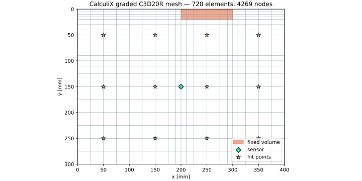
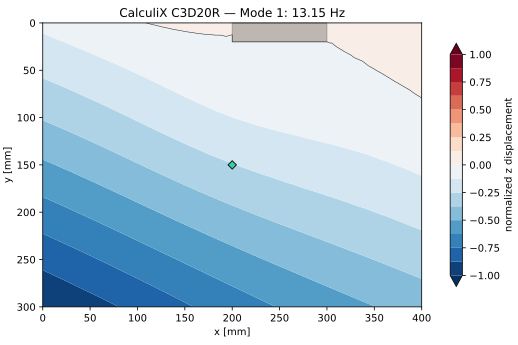
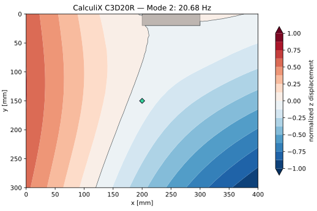
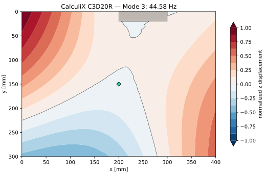
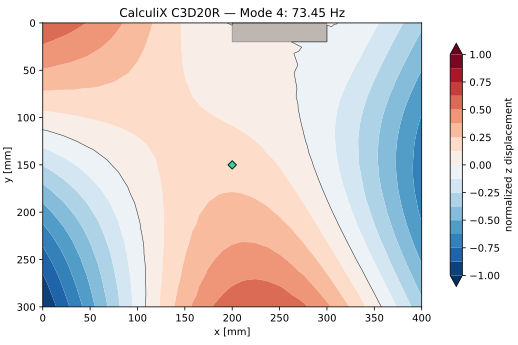
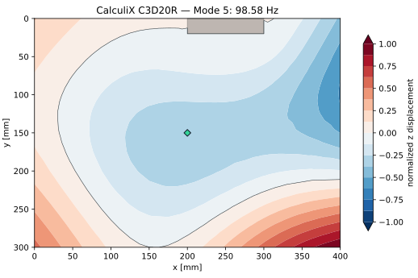
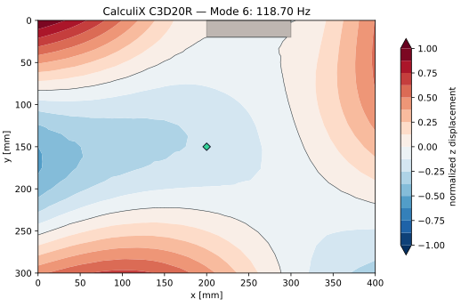
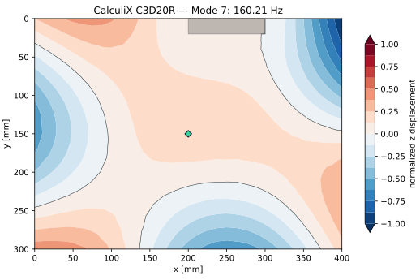
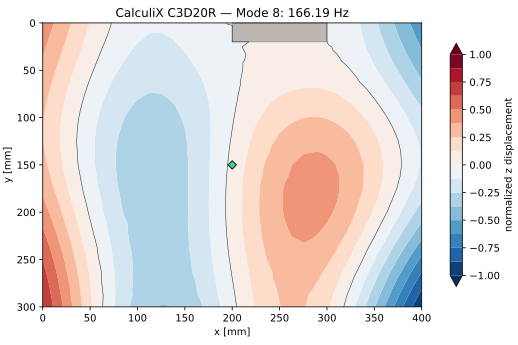
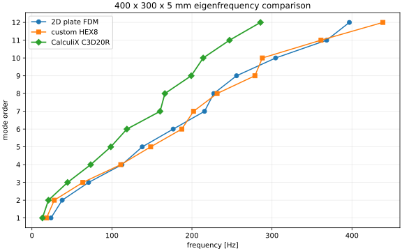

300 × 400 mm板を横置き（解析座標 x=400、y=300 mm）し、板厚5 mmのPMMAをCalculiX 2.20のC3D20R要素で解析しました。2D板モデルと独自HEX8モデルに対する基準固有値を示します。
現行400 × 200 × 3 mmのCalculiX解析へ戻る

| ソルバー | CalculiX CrunchiX 2.20 | SPOOLES + ARPACK |
|---|---|---|
| 要素 | C3D20R | 20節点二次六面体・低減積分 |
| 板厚 | 5 mm | z=-2.5、0、2.5 mmの2層 |
| 固定 | x=200–300、y=0–20 mm | 349節点のXYZ変位を拘束 |
| センサ | (200, 150, 2.5) mm | 上面中央 |









| 手法 | Mode 1 | Mode 2 | Mode 3 | Mode 4 |
|---|---|---|---|---|
| 2D板FDM | 23.80 | 37.84 | 70.85 | 112.57 Hz |
| 独自HEX8 | 18.236 | 27.973 | 63.620 | 111.046 Hz |
| CalculiX C3D20R | 13.151 | 20.676 | 44.584 | 73.453 Hz |
python calculix/generate_model.py \
--output web/assets/simulation/5mm-400x300/calculix \
--width-mm 400 --height-mm 300 --thickness-mm 5
ccx acrylic_pan
python calculix/postprocess_profile.py \
--output web/assets/simulation/5mm-400x300/calculix \
--reference web/assets/simulation/5mm-400x300